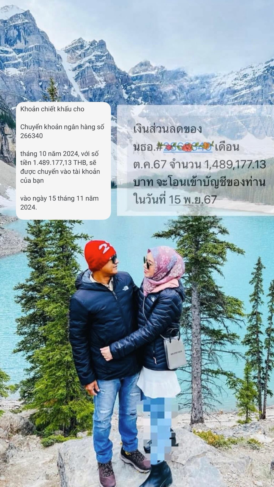

Công nhân viên chức làm Amway
Diamond Sakeeyah Samapu từng là y tá và công chức nhà nước, ngoài giờ còn bán thêm cá viên chiên. Chị luôn tìm kiếm cơ hội để gia đình có cuộc sống tốt hơn và thu nhập ổn định hơn. Khi mong muốn đủ lớn, cơ hội đã đến: chị bắt gặp mô hình kinh doanh Amway.
- 2 năm lên Silver
- 3 năm lên Platinum
- 2 năm sau lên Ruby
- 14 năm lên Diamond
Chị làm Amway khi con còn nhỏ (3 đứa) và xã hội bất ổn, bom đạn, chính trị nhiều biến động. Nhưng chị quyết không để hoàn cảnh trở thành lý do. Chị chọn đưa con đến nơi an toàn, dồn tâm xây dựng kinh doanh để có tương lai tốt hơn.
Những chia sẻ mình ghi lại từ câu chuyện này:
- Đừng để con cái trở thành cái cớ: “Ba mẹ không làm được là vì con”.
- Chưa từng ngừng chuyến đường dài 4 tiếng từ tỉnh lên thành phố để gặp tuyến trên và học từ người thành công.
- Chuyển nhà lên thành phố để được học hỏi gần hơn, chủ động xây dựng đội nhóm.
- Kinh doanh này là kinh doanh của người lãnh đạo, vì vậy chị tự tổ chức center cho đội nhóm.
- “Tôi không có tiền nhưng ước mơ rất rõ.”
Chị nhấn mạnh: thất bại chỉ là tạm thời, ước mơ và thành công mới là điều lâu dài. Người thành công là người bình thường dám hạ quyết tâm thay đổi, dù thay đổi có thể đau một chút nhưng đổi lại cuộc đời sẽ tốt hơn rất nhiều.
Khủng hoảng có thể quay lại bất kỳ lúc nào (như Covid), vì vậy cần thành công nhanh để không còn sợ hãi. Người thành công luôn cố gắng thêm một chút nữa, nhẫn nại và kiên trì tới khi thấy được kết quả.
“Thành công xảy ra hai lần: một lần trong trí tưởng tượng và một lần khi điều đó trở thành sự thật.” Câu hỏi cuối cùng chị dành cho tất cả chúng ta: Các bạn đã nhìn thấy hình ảnh thành công của mình chưa?